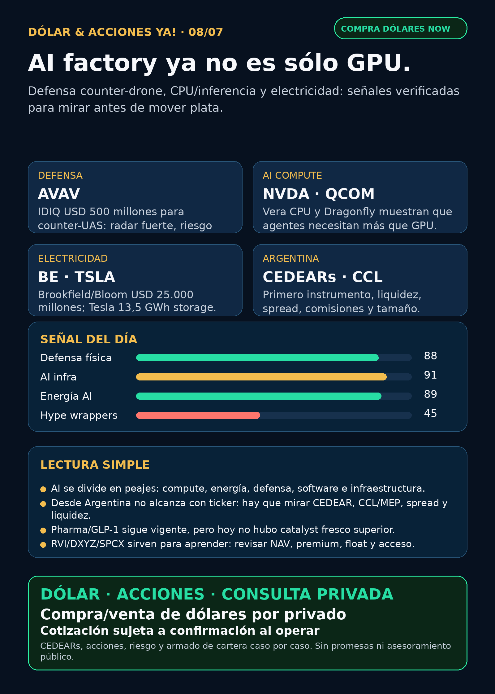

AI factory ya no es sólo GPU.
Defensa counter-drone, CPU/inferencia y electricidad para data centers: research educativo, no orden de compra.
Texto WhatsApp
Placa del día

Dólar & Acciones YA — 08/07
Lectura simple del día
La señal de hoy no es una sola acción de moda. Es un mapa: AI se está partiendo en capas físicas. Una capa es compute —GPU, CPU, memoria, inferencia—. Otra capa es electricidad —generación, storage, red, fuel cells, transformadores y permisos—. Y otra capa es mundo físico/defensa, donde drones y counter-drones ya tienen presupuesto real.
En criollo: si una empresa dice “AI”, no alcanza. Hay que preguntar qué peaje cobra: chips, energía, software, red, defensa, data center, logística o capital. Y desde Argentina hay otra pregunta igual de importante: aunque la empresa sea buena, ¿existe instrumento local o global accesible, con liquidez, spread razonable, CCL/MEP claro y tamaño prudente?
Contexto dólar para lectores argentinos: BlueLytics: oficial vendedor ARS 1.513,00 y blue vendedor ARS 1.515,00; timestamp 2026-07-08T08:45:50.806513-03:00. CriptoYa: MEP AL30 ARS 1.529,66, CCL AL30 ARS 1.585,95, USDT cripto ask ARS 1.570,90; timestamp 1783454393. Para ejecución real, esto es referencia educativa: confirmar precio vivo, comisiones, spread y liquidación en el broker.
Esto está ordenado por valor educativo y fuerza de señal, no por recomendación de compra.
Tesis central
AI factory ya no es sólo GPU. NVIDIA empuja Vera como CPU para agentes; Qualcomm intenta entrar con Dragonfly/AI300 y Modular; Bloom/Brookfield empujan energía para data centers a USD 25.000 millones; Tesla mostró storage real; y AeroVironment confirmó un contrato grande de counter-UAS.
La lectura de inversión humana: buena empresa ≠ buena inversión al precio actual ≠ buen instrumento para Argentina ≠ buen tamaño dentro de una cartera.
Señales educativas del día
1) AVAV — defensa física y counter-drone con presupuesto real
- Empresa/ticker: AeroVironment /
AVAV. - Qué pasó: AV anunció el 06/07/2026 un contrato IDIQ de tres años por USD 500 millones para apoyar el programa Domestic Shield de JIATF-401 con capacidades C-UAS/C-sUAS.
- Fuente: https://www.avinc.com/2026/07/06/av-awarded-500-million-idiq-for-support-of-jiatf-401-domestic-shield-program/
- Lectura en criollo: defensa ya no es sólo Lockheed/Raytheon. Drones, anti-drones, sensores, software operativo y homeland defense son carriles reales.
- Riesgo: valuación, ejecución, integración BlueHalo y material weaknesses históricas.
- Accionable local Argentina: no asumir CEDEAR ni ejecución simple. Verificar broker, liquidez, spread, CCL y tamaño.
- Estado: señal fortalecida / radar alto, no recomendación personalizada.
2) NVIDIA + Qualcomm — AI compute se abre a CPU e inferencia
- NVDA: NVIDIA publicó que innovadores como Perplexity adoptan NVIDIA Vera; el argumento es que los agentes necesitan CPU single-thread rápido para tool calling, code execution, KV-cache y loops de agentes.
- Fuente NVDA: https://blogs.nvidia.com/blog/nvidia-vera-max-single-threaded-cpu-at-scale/
- QCOM: Qualcomm anunció roadmap Dragonfly: C1000 CPU, High Bandwidth Compute, AI300 inference accelerator, conectividad y custom silicon. SEC 8-K del 24/06/2026 confirma acuerdo para adquirir Modular Inc. con emisión de hasta 19,2 millones de acciones.
- Fuentes QCOM/SEC: https://www.qualcomm.com/news/releases/2026/06/qualcomm-unveils-comprehensive-data-center-roadmap-for-the-agent y https://www.sec.gov/Archives/edgar/data/804328/000110465926077071/tm2618522d1_8k.htm
- Lectura: no todo el moat de AI será “GPU pura”. La inferencia y los agentes pueden crear demanda de CPU, memoria, networking, software de compilación y energía.
- Riesgo: NVDA sigue con valuación exigente; QCOM tiene tesis emergente, todavía no moat probado tipo NVIDIA.
- Accionable local/global: NVDA tiene vía global y suele tener CEDEAR; QCOM debe verificarse en broker local/CEDEAR antes de hablar de ejecución. En ambos casos mirar spread, CCL y precio vivo.
- Estado: NVDA fortalece tesis; QCOM entra a radar.
3) Bloom/Brookfield + Tesla — electricidad rápida para AI
- BE/Brookfield: POWER Magazine verificó que Brookfield y Bloom expanden su partnership de AI infrastructure power de USD 5.000 millones a USD 25.000 millones.
- Fuente: https://www.powermag.com/brookfield-bloom-energy-expand-ai-infrastructure-partnership-to-25-billion/
- TSLA: Exhibit 99.1 del 8-K de Tesla del 02/07/2026 informó más de 450.000 vehículos producidos, más de 480.000 entregados y 13,5 GWh de storage deployed en Q2.
- Fuente TSLA: https://www.sec.gov/Archives/edgar/data/1318605/000162828026046717/exhibit99111111.htm
- Lectura: el segundo peaje de AI es electricidad física. No sólo generación: también storage, interconexión, confiabilidad, permitting, fuel cells, subestaciones y contratos de energía.
- Accionable local Argentina: Bloom no se presume accesible localmente; TSLA puede tener vía global/CEDEAR pero hay que chequear ratio, volumen, spread y CCL. Energéticas argentinas como
YPF,PAMP,TGS,CEPUsirven como capa educativa local, no como proxy automático de data centers de Estados Unidos. - Estado: energía AI fortalecida / vigilar.
4) Pharma/GLP-1 — cuidado con titulares reciclados
- Empresa/ticker: Eli Lilly /
LLY. - Qué pasó: FDA aprobó Foundayo/orforglipron, pero la fuente primaria muestra fecha 01/04/2026, no julio.
- Fuente: https://www.fda.gov/news-events/press-announcements/fda-approves-first-new-molecular-entity-under-national-priority-voucher-program
- Lectura: GLP-1/metabólicas sigue siendo una tesis estructural enorme, pero no se debe vender un pickup tardío como catalyst fresco.
- NVO: SEC 6-K del 06/07/2026 confirmó continuidad del buyback hasta DKK 15.000 millones; es capital return, no señal clínica.
- Fuente NVO: https://www.sec.gov/Archives/edgar/data/353278/000117184326004469/f6k_070626.htm
- Estado: pharma revisada; tesis estructural vigente, sin señal diaria superior a AI infra/energía/defensa.
5) RVI/DXYZ/SPCX — private wrappers no son magia
- RVI: Form 4 del 01/07/2026 muestra ventas de Robinhood Markets en RVI ejecutadas el 29/06 y 30/06 a precios aproximados entre USD 33,08 y USD 34,77.
- Fuente: https://www.sec.gov/Archives/edgar/data/2085091/000178387926000087/xslF345X06/wk-form4_1782941527.xml
- Lectura: sponsor sales, float y liquidez importan. No tratar RVI/DXYZ como “comprar SpaceX/OpenAI limpio” sin NAV, premium/descuento, holdings, lockups, liquidez y acceso Argentina/USA.
- SPCX: sigue radar alto por filings SEC previos y emisión de senior notes, pero no es “acción barata comprable para todos” sin revisar instrumento, precio vivo, float y broker.
- Estado: educación/riesgo de wrapper.
Watchlist base — seguimiento rápido
- RKLB: tesis vigente por acuerdo para adquirir Iridium: SEC/EX-99.1 confirmó USD 54 por acción, valor empresa aprox. USD 8.000 millones, cierre esperado mid-2027 y bridge debt USD 3.600 millones. Fortalece infraestructura espacial, pero suben deuda, integración, aprobación regulatoria y riesgo de dilución. Fuente: https://www.sec.gov/Archives/edgar/data/1819994/000175392626001085/g085783_ex99-1.htm
- NVDA: señal nueva por Vera CPU/agentes. Moat estructural fuerte; precio/valuación se analiza aparte.
- PLTR: sin señal operacional primaria fuerte; filings de ownership/ventas no son moat.
- TSM: moat foundry vigente; sin fuente primaria nueva fuerte en esta corrida.
- MU: HBM sigue tesis estructural por filings previos; sin novedad primaria fresca hoy.
- GOOGL/GOOG: cloud, TPUs y distribución siguen estructurales; sin señal primaria nueva fuerte hoy.
- AAPL: revisada sin señal fuerte; no vender como AI moat automático sin producto/monetización verificable.
- HOOD: agentic trading/Chain sigue como educación gobernada; sin señal operacional nueva fuerte hoy.
- TSLA: Q2 deliveries/storage verificados; vigilar earnings/margen/storage.
- ASML: moat EUV/High-NA vigente;
ASML sí / all-in no. - Gold / GLD / GOLD / B: instrumento ambiguo. No publicar precio/tesis sin confirmar si es oro físico, ETF, minera u otro ticker.
- RVI: sponsor sales; vigilar NAV/premium/liquidez/acceso.
- CBRS: radar alto por OpenAI/AWS/Q1 previos; sin filing nuevo hoy.
Energía y capa Argentina
- AI power global: Bloom/Brookfield, Tesla storage, utilities, fuel cells, nuclear/gas, grid, transformers, switchgear y subestaciones.
- Transformadores/power hardware: carril obligatorio revisado. Sin primaria limpia nueva hoy para Corea/Hyosung/HD Hyundai más allá de señales secundarias recientes. Mantener en radar: Hitachi/Hitachi Energy (
6501.T/HTHIY), Siemens Energy (ENR.DE), GE Vernova (GEV), HD Hyundai Electric (267260.KS), Hyosung Heavy Industries (298040.KS), Virginia Transformer y Delta Star. - Argentina:
YPF,PAMP,TGS,CEPUrevisadas como educación local. No son proxy perfecto de data centers USA; sirven para entender gas, generación, tarifas, Vaca Muerta, deuda y regulación local. - En criollo: utility = empresa de electricidad/gas/red. Puede tener demanda fuerte y al mismo tiempo sufrir capex, deuda, regulación, permisos y tarifas.
Defensa, space, autonomous mobility y crypto gobernado
- Defensa/guerra física:
AVAV,GE,RTX,LMT,NOC,GD,HWM,KTOS,BA,ITA/XARrevisados. Señal fuerte hoy: AVAV counter-UAS. GE Aerospace sin señal operacional nueva fuerte en esta corrida. - Space/orbital AI:
RKLBySPCXrevisados. RKLB/Iridium sigue como deal transformacional con riesgo. SPCX sigue radar alto, no accionable automático para Argentina. - Autonomous mobility / physical AI: TSLA tuvo señal operativa; Waymo/Alphabet, Uber, Zoox/Amazon y Joby revisados sin señal primaria nueva fuerte.
- Crypto gobernado: sin token nuevo para elevar. Carril sólo educación/infraestructura/proxies regulados; nada de casino de tokens.
Red flags / hype para ignorar
- Comprar cualquier cosa que diga AI sin mirar deuda, capex, valuación, permisos y liquidez.
- Confundir “demanda eléctrica de data centers” con revenue automático para cualquier utility.
- Tratar Bloom/BE como apuesta segura: es alto beta tecnológico/financiero.
- Convertir QCOM en “nuevo NVIDIA” sin evidencia de revenue/moat comparable.
- Vender Foundayo/orforglipron como noticia fresca de julio cuando la FDA lo fechó en abril.
- Vender RVI/DXYZ como acceso limpio a SpaceX/OpenAI sin NAV, premium, holdings y liquidez.
- Hablar de Gold/GLD/GOLD/B sin instrumento exacto.
Qué mirar después
- AVAV: ejecución del IDIQ, órdenes concretas, márgenes, BlueHalo/material weaknesses y backlog.
- NVIDIA/Qualcomm: adopción real de Vera/Dragonfly/AI300, revenue y clientes.
- Bloom/Brookfield: contratos, deployment, márgenes, financiamiento y riesgo de balance.
- Tesla: earnings del 22/07, margen automotriz, storage revenue y cash flow.
- Power hardware: GEV, Siemens Energy, Hitachi Energy, HD Hyundai, Hyosung; buscar primarias de orders/backlog.
- RVI/DXYZ/SPCX: NAV, premium/descuento, liquidez, lockups, float y acceso Argentina/USA.
Servicio privado
Dólar · CEDEARs · acciones · consulta privada. Si querés comprar o vender dólares, invertir en acciones o pensar una estrategia financiera más personalizada, escribime por privado y lo vemos caso por caso. Cotización sujeta a confirmación al momento de operar.
Disclaimer
Esto es research educativo y editorial, no asesoramiento financiero personalizado. Buena empresa ≠ buena inversión al precio actual ≠ buen instrumento para Argentina ≠ buen tamaño dentro de una cartera.